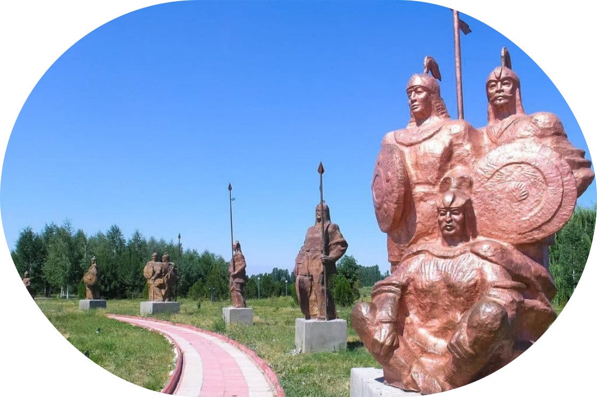

Гумбез Манаса
Гумбез Манаса – история, легенды и значение
Гумбез Манаса – это один из самых известных архитектурных памятников Кыргызстана, связанный с именем эпического баатыра Манаса. Это не просто мавзолей, а священное место, наполненное легендами и тайнами. Гумбез Манаса, один из наиболее знаменитых исторических памятников Кыргызстана, расположен в селе Ташарык в 22 км к северо-востоку от города Талас, а также является важным культурным и историческим объектом, который отражает богатое наследие кыргызского народа.
.svg)
История возникновения
История этого загадочного сооружения окутана тайнами и легендами. Согласно одному из преданий, в этом мавзолее захоронен легендарный богатырь Манас, а воздвиг его его сын Семетей.
По другой версии, мавзолей построила Каныкей, верная жена Манаса. Для изготовления кирпичей использовали особую глину, в которую добавляли козью и коровью шерсть. Чтобы сделать кирпичи прочными, их варили в казане с салом тысяч баранов. Каныкей якобы также захоронила здесь драгоценности и сокровища, а чтобы уберечь гробницу от грабителей, приказала нанести надпись о том, что здесь покоится Кянизяк-хатун. Третья версия гласит, что на самом деле Каныкей спрятала тело Манаса в далеких пещерах у подножия гор, а мавзолей был построен лишь для того, чтобы обмануть врагов.
Однако историки и археологи установили, что Гумбез Манаса был воздвигнут в 1334 году над могилой Кянизяк-хатун, дочери эмира Абуки. Для строительства были приглашены мастера из Бухары, Самарканда и Кашгара. Со временем мавзолей стал местом захоронения других людей — умерших хоронили в древних гробах под полом мавзолея, которые со временем разрушались, а на их месте появлялись новые погребения.


Архитектура и реставрация
Гумбез Манаса представляет собой четырехугольное однокамерное помещение. Его размеры снаружи составляют 6,8 м × 7,1 м, а высота достигает 11 метров. Стены в некоторых местах имеют толщину более 1 метра. Завершает постройку куполообразная восьмиугольная крыша.
Мавзолей построен из обожженного кирпича, а его фасад украшен геометрическими и растительными орнаментами, напоминающими кыргызские национальные узоры. Также в оформлении можно заметить каллиграфические надписи, которые при солнечном освещении создают интересную игру светотени.
Гумбез Манаса оказал значительное влияние на развитие архитектуры Кыргызстана. В 1970 году советские ученые провели его реставрацию, а последние восстановительные работы завершились в 1994 году, приуроченные к 1000-летию эпоса «Манас».
Комплекс «Манас Ордо»
После реконструкции Кумбеза Манаса в 1970 году началась история кыргызского национального комплекса «Манас Ордо». Этот мемориальный комплекс, занимающий территорию в 225 гектаров, включает в себя мавзолей Манаса, музей-заповедник и мечеть. Все постройки выполнены в традиционном национальном стиле, отражая богатое культурное наследие кыргызского народа.
С момента основания «Манас Ордо» несколько раз реорганизовывался. Изначально он был литературно-этнографическим музеем, затем получил статус музей-заповедника, затем областного комплекса, а в 2001 году стал Национальным комплексом «Манас Ордо».
Здесь можно увидеть археологические памятники, наскальные рисунки, каменные изваяния, курганы и петроглифы, а также древние рунические надписи. Каждый элемент комплекса хранит историю кыргызского народа и связан с легендарной эпохой Манаса.
Несмотря на споры археологов и предания сказителей-манасчи, Кумбез Манаса остается одним из важнейших архитектурных и культурных памятников Кыргызстана, который привлекает тысячи посетителей со всего мира.
Точное местоположение:
Координаты: 42.8652° N, 72.9880° E
Время в пути от Бишкека на автомобиле: около 8–9 часов